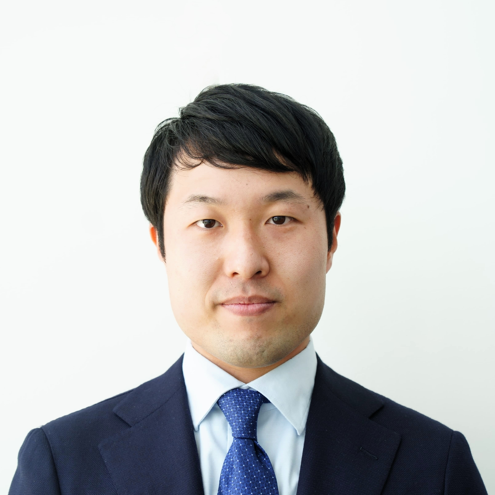

Yuto MIYATAKE / 宮武 悠人 (みやたけ ゆうと)
- [Affiliation] Department of Electrical Engineering and Information Systems, Graduate School of Enginnering, The University of Tokyo
[所属] 東京大学 大学院工学系研究科 電気系工学専攻
- [Position] Assistant Professor
[職名] 助教
- [Office Address] Room 412, Takeda Building, 2-11-16 Yayoi, Bunkyo-ku, 113-0032 Tokyo, Japan
[勤務先住所] 〒113-0032 東京都文京区弥生2-11-16 武田先端知ビル 412号室
- [E-mail] miyatake〈at〉g.ecc.u-tokyo.ac.jp
- [Date of Birth] April 23rd, 1995
[生年月日] 1995年4月23日
- [Place of Birth] Kan-onji City, Kagawa Prefecture, Japan
[出身地] 香川県観音寺市

Google Scholar

GitHub
Education
- April 2002 - March 2008:
観音寺市立 一ノ谷小学校
- April 2008 - March 2011:
三豊市観音寺市学校組合立 三豊中学校
- April 2011 - March 2014:
Kagawa Prefectural Kanonji Daiichi High School
香川県立 観音寺第一高等学校
- April 2015 - March 2017:
Natural Science I, Junior Division, College of Arts and Sciences, The University of Tokyo
東京大学 教養学部 前期課程 理科一類
- April 2017 - March 2019:
Department of Information and Communication Engineering, Faculty of Engineering, The University of Tokyo
東京大学 工学部 電子情報工学科
- April 2019 - March 2021:
Master course, Department of Electrical Engineering and Information Systems, Graduate School of Enginnering, The University of Tokyo
東京大学 大学院工学系研究科 電気系工学専攻 修士課程
- April 2021 - March 2024:
Doctoral course, Department of Electrical Engineering and Information Systems, Graduate School of Enginnering, The University of Tokyo
東京大学 大学院工学系研究科 電気系工学専攻 博士課程
Career
Publication
Journal Paper (First author)
AY2019
- Y. Miyatake, N. Sekine, K. Toprasertpon, S. Takagi, and M. Takenaka, “Computational design of efficient grating couplers using artificial intelligence,” Jpn. J. Appl. Phys., vol. 59, SGGE09, 2020. DOI: 10.7567/1347-4065/ab641c
AY2022
- Y. Miyatake, C.-P. Ho, P. Pitchappa, R. Singh, K. Makino, J. Tominaga, N. Miyata, T. Nakano, K. Toprasertpong, S. Takagi, and M. Takenaka, “Non-volatile compact optical phase shifter based on Ge2Sb2Te5 operating at 2.3 µm,” Opt. Mater. Express, vol. 12, no. 12, pp. 4582–4593, 2022. DOI: 10.1364/OME.473987
- Y. Miyatake, K. Makino, J. Tominaga, N. Miyata, T. Nakano, M. Okano, K. Toprasertpong, S. Takagi, and M. Takenaka, “Proposal of low-loss non-volatile mid-infrared optical phase shifter based on Ge2Sb2Te3S2,” IEEE Trans. Electron Devices, vol. 70 no. 4, pp. 2106–2112, April 2023. DOI: 10.1109/TED.2023.3235865
AY2023
- Y. Miyatake, K. Toprasertpong, S. Takagi, and M. Takenaka, “Design of compact and low-loss S-bends by CMA-ES,” Optics Express, vol. 31, no. 26, pp. 43850– 43863, Dec. 2023. DOI: 10.1364/OE.504866
AY2024
- Y. Miyatake, R. Tang, K. Makino, J. Tominaga, N. Miyata, M. Okano, K. Toprasertpong, S. Takagi, M. Takenaka, “Photonic matrix-vector multiplication with low-insertion-loss and non-volatile Ge2Sb2Te3S2 intensity modulators,” IEEE/OSA Journal of Lightwave Technology, vol. 42, no. 12, pp. 4347–4354, June 2024 (invited). DOI: 10.1109/JLT.2024.3408877
- Y. Miyatake, K. Toprasertpong, S. Takagi, and M. Takenaka, “Compact, low-loss, and broadband 2 × 2 Si optical coupler designed by covariance matrix adaptation evolution strategy,” Jpn. J. Appl. Phys., vol. 63, 12SP16, Dec. 2024. DOI: 10.35848/1347-4065/ad983b
Journal Paper (Co-author)
AY2021
- Z. Zhao, C.-M. Lim, C. Ho, K. Sumita, Y. Miyatake, K. Toprasertpong, S. Takagi, and M. Takenaka, “Low-loss Ge waveguide at the 2-µm band on an n-type Ge-on-insulator wafer,” Opt. Mater. Express, vol. 11, no. 12, pp. 4097–4106, 2021. DOI: 10.1364/OME.444071
AY2022
- M. Takenaka, Z. Zhao, C.-P. Ho, T. Fujigaki, T. Piyapatarakul, Y. Miyatake, R. Tanga, K. Toprasertpong, and S. Takagi, “Ge-on-insulator Platform for Mid-infrared Photonic Integrated Circuits,” ECS Trans., vol. 109, no. 4, pp. 47–58, 2022 (invited). DOI: 10.1149/10904.0047ecst
- T. Ochiai, T. Akazawa, Y. Miyatake, K. Sumita, S. Ohno, S. Monfray, F. Boeuf, K. Toprasertpong, S. Takagi, and M. Takenaka, “Ultrahigh-responsivity waveguide-coupled optical power monitor for Si photonic circuits operating at near-infrared wavelengths,” Nature Communications, vol. 13, 7443, 2022. DOI: 10.1038/s41467-022-35206-4
AY2023
- H. Sakumoto, T. Nakayama, Y. Miyatake, K. Toprasertpong, S. Takagi, and M. Takenaka, “Numerical evaluation of bandwidth and optical loss in InP-organic hybrid optical modulator with doping optimization,” Jpn. J. Appl. Phys., vol. 63, 02SP52, 2024. DOI: 10.35848/1347-4065/ad189b
AY2024
- K. Taki, N. Sekine, K. Watanabe, Y. Miyatake, T. Akazawa, H. Sakumoto, K. Toprasertpong, S. Takagi, and M. Takenaka, “Nonvolatile optical phase shift in ferroelectric hafnium zirconium oxide,” Nature Communications, vol. 15, 3549, May 2024. DOI: 10.1038/s41467-024-47893-2
- Y. Wakita, R. Tang, H. Tang, S. Ohno, T. Akazawa, Y. Miyatake, S. Monfray, F. Boeuf, K. Toprasertpong, S. Takagi, and M. Takenaka, “Add-drop microring resonator switch with positive/negative phase tuning using InGaAsP/Si hybrid MOS phase shifter,” IEEE/OSA Journal of Lightwave Technology, vol. 42, no. 12, pp. 4289–4295, June 2024 (invited). DOI: 10.1109/JLT.2024.3383724
International Conference (First author)
AY2019
- Y. Miyatake, N. Sekine, K. Toprasertpong. S. Takagi, and M. Takenaka, “Optimization of grating couplers on SOI using artificial intelligence,” 9th International Symposium on Photonics and Electronics Convergence (ISPEC2019), P-8, Tokyo, 26–27 November 2019.
- Y. Miyatake, N. Sekine, K. Toprasertpong, S. Takagi, and M. Takenaka, “Computational design of high-efficiency grating coupler based on deep learning,” International Conference on Solid State Devices and Materials (SSDM), B-2-05, Nagoya, 2–5 Sept. 2019.
AY2020
- Y. Miyatake, C. P. Ho, P. Pitchappa, R. Singh, K. Makino, J. Tominaga, N. Miyata, T. Nakano, N. Sekine, K. Toprasertpong, S. Takagi, and M. Takenaka, “Non-volatile compact optical phase shifter based on Ge2Sb2Te5 operating at mid-infrared wavelength,” 10th International Symposium on Photonics and Electronics Convergence (ISPEC2020), S-5, Tokyo, 30 November–1 December 2020.
- Y. Miyatake, C.-P. Ho, P. Pitchappa, R. Singh, K. Makino, J. Tominaga, N. Miyata, T. Nakano, N. Sekine, K. Toprasertpong, S. Takagi, and M. Takenaka, “Mid-infrared non-volatile compact optical phase shifter based on Ge2Sb2Te5,” European Conference on Optical Communication (ECOC 2020), Tu2B-5, Brussels, Belgium, 6–10 December 2020.
AY2021
- Y. Miyatake, C.-P. Ho, K. Makino, J. Tominaga, N. Miyata, T. Nakano, N. Sekine, K. Toprasertpong, S. Takagi, and M. Takenaka, “Reduction of optical loss of phase-change phase shifter based on Ge2Sb2Te5 operating at mid-infrared wavelength,” 11th International Symposium on Photonics and Electronics Convergence (ISPEC2021), P-22, Tokyo, 13–15 December 2021.
AY2022
- Y. Miyatake, K. Toprasertpong, S. Takagi, and M. Takenaka, “Compact, low-loss, fabrication-tolerant, and thermally stable 2x2 Si optical coupler designed by CMA-ES,” International Conference on Solid State Devices and Materials (SSDM2022), A-10-04, Makuhari Messe, Japan, 26–29 Sept. 2022.
- Y. Miyatake, K. Toprasertpong, S. Takagi, and M. Takenaka, “Optimization of Compact and Low-loss 2×2 Si Optical Coupler based on CMA-ES,” 12th International Symposium on Photonics and Electronics Convergence (ISPEC2022), P-2, Tokyo, 1–2 December 2022.
- Y. Miyatake, K. Makino, J. Tominaga, N. Miyata, T. Nakano, M. Okano, K. Toprasertpong, S. Takagi, M. Takenaka, “Record-low loss non-volatile mid-infrared PCM optical phase shifter based on Ge2Sb2Te3S2,” International Electron Devices Meeting (IEDM2022), 19.1, San Francisco, 3–7 December 2022.
AY2023
- Y. Miyatake, K. Toprasertpong, S. Takagi, and M. Takenaka, “Compact Low-loss S-bends Designed by CMA-ES,” Conference on Lasers and Electro-Optics (CLEO2023), SF3E.1, San Jose, USA, 7–12 May 2023.
- Y. Miyatake, R. Tang, K. Makino, J. Tominaga, N. Miyata, M. Okano, K. Toprasertpong, S. Takagi, and M. Takenaka, “Photonic tensor core with low-insertion-loss, non-volatile Ge2Sb2Te3S2 intensity modulators,” European Conference on Optical Communication (ECOC2023), Tu.B.3.3, Glasgow, UK, 1–5 October 2023.
- Y. Miyatake, R. Tang, K. Makino, J. Tominaga, N. Miyata, M. Okano, K. Toprasertpong, S Takagi, and M. Takenaka, “Photonic matrix multiplication with Ge2Sb2Te3S2 intensity modulators,” 13th International Symposium on Photonics and Electronics Convergence (ISPEC2023), P-27, Tokyo, 1–2 November 2023.
AY2024
- Y. Miyatake, K. Toprasertpong, S. Takagi, and M. Takenaka, “Experimental demonstration of compact, low-loss and broadband 22 Si optical coupler designed by CMA-ES,” International Conference on Solid State Devices and Materials (SSDM), E-3-04, Arcrea Himeji, Himeji, Japan, 1–4 Sept. 2024.
International Conference (Co-author)
AY2020
- E. Nako, K. Toprasertpon, R. Nakane, Z. Wang, Y. Miyatake, M. Takenaka, and S. Takagi, “Proposal and experimental demonstration of reservoir computing using Hf0.5Zr0.5O2/Si FeFETs for neuromorphic applications,” VLSI Symposium, Hawaii, USA, 14–19 June 2020.
- K. Toprasertpong, E. Nako, R. Nakane, Z. Wang, Y. Miyatake, M. Takenaka, and S. Takagi, “CMOS-compatible physical reservoir computing using ferroelectric field-effect transistors,” International Symposium on Nonlinear Theory and Its Applications (NOLTA2020), virtual, 16–19 Nov. 2020 (invited).
AY2021
- H. Tang, S. Ohno, Y. Miyatake, K. Toprasertpong, S. Takagi, and M. Takenaka, “Thermo-optic Mach–Zehnder interferometer integrated with Si PN diode switch for bipolar optical phase control,” Optical Fiber Communication Conference (OFC2021), Tu5B.5, 6–11 June 2021.
AY2022
- M. Takenaka, H. Tang, K. Watanabe, T. Ochiai, T. Akazawa, Y. Miyatake, S. Ohno, K. Sumita, S. Monfray, F. Boeuf, R. Tang, K. Toprasertpong, and S. Takagi, “III-V/Si hybrid integration for scalable optical switching and computing,” International Conference on Photonics in Switching and Computing (PSC2022), Toyama, 3–7 July 2022 (invited).
- M. Takenaka, Z. Zhao, T. Piyapatarakul, Y. Miyatake, K. Toprasertpong, and S. Takagi, “Ge-on-insulator platform for mid-infrared photonic integrated circuits,” 242th ECS Meeting, Symposium G03, Hilton Atlanta, Atlanta, USA, 9–13 October 2022 (invited).
- M. Takenaka, T. Ochiai, T. Akazawa, Y. Miyatake, K. Sumita, S. Ohno, S. Monfray, F. Boeuf, K. Toprasertpong, and S. Takagi, “Si hybrid integration using ultrathin III-V membrane for photodetection,” 12th International Symposium on Photonics and Electronics Convergence (ISPEC2022), D-2, Tokyo, 1–2 December 2022.
AY2023
- M. Takenaka, H. Tang, K. Watanabe, T. Ochiai, T. Akazawa, M. Huang, Y. Wakita, Y. Miyatake, S. Ohno, K. Sumita, S. Monfray, F. Boeuf, R. Tang, K. Toprasertpong, and S. Takagi, “Scalable programmable photonic integrated circuits by III-V/Si hybrid integration,” Optica Advanced Photonics Congress (OAPC), Busan, Korea, 9–13 July 2023 (invited).
- H. Sakumoto, T. Nakayama, Y. Miyatake, K. Toprasertpong, S. Takagi, and M. Takenaka, “Numerical evaluation of modulation bandwidth and insertion loss in InP-EO polymer hybrid optical modulator with doping optimization,” International Conference on Solid State Devices and Materials (SSDM2023), H-7-04, Nagoya Congress Center, Nagoya, Japan, 5–8 Sept. 2023.
- Y. Wakita, R. Tang, H. Tang, S. Ohno, T. Akazawa, Y. Miyatake, S. Monfray, F. Boeuf, K. Toprasertpong, S Takagi, M. Takenaka, “Low-power add-drop microring resonator switch with positive/negative phase tuning using InGaAsP/Si hybrid MOS phase shifter,” European Conference on Optical Communication (ECOC2023), We.D.4.2, Glasgow, UK, 1–5 October 2023.
- C. Zhang, Z. Zhao, R. Tang, T. Akazawa, Y. Miyatake, K. Toprasertpong, S. Takagi, and M. Takenaka, “Ge avalanche photodiode integrated with microring resonator for 2 µm wavelengths on Ge-on-insulator platform,” 13th International Symposium on Photonics and Electronics Convergence (ISPEC2023), P-33, Tokyo, 1–2 November 2023.
- H. Sakumoto, T. Nakayama, Y. Miyatake, K. Toprasertpong, S. Takagi, and M. Takenaka, “Evaluation of the impact of the doping optimization on the modulation bandwidth and the optical loss of the InP-EO polymer hybrid optical modulator,” 13th International Symposium on Photonics and Electronics Convergence (ISPEC2023), P-12, Tokyo, 1–2 November 2023.
AY2024
- M. Takenaka, Y. Miyatake, R. Tang, K. Makino, J. Tominaga, N. Miyata, M. Okano, K. Toprasertpong, and S. Takagi, “Si programmable photonic integrated circuits based on phase change materials,” IEEE Si Photonics Conference, ThD2, Hilton Tokyo Bay, Japan, 15–18 April 2024 (invited).
- K. Komatsu, T. Nakayama, T. Akazawa, Y. Wakita, H. Sakumoto, C. Zhang, Y. Miyatake, S. Monfray, F. Boeuf, R. Tang, K. Toprasertpong, S. Takagi, and M. Takenaka, “Plasmonic Photodetector with InGaAs Membrane on Si Waveguide using Ni-InGaAs Alloy,” European Conference on Optical Communication (ECOC), W2A.27, Frankfurt, Germany, 22–26 September 2024.
- H. Sakumoto, Y. Miyatake, K. Toprasertpong, S. Takagi, and M. Takenaka, “InP-Si interlayer optimization using GPU-accelerated CMA-ES,” 14th International Symposium on Photonics and Electronics Convergence (ISPEC), P-11, Tokyo, 26–27 November 2024.
- K. Komatsu, T. Nakayama, T. Akazawa, Y. Wakita, H. Sakumoto, C. Zhang, Y. Miyatake, S. Monfray, F. Boeuf, R. Tang, K. Toprasertpong, S. Takagi, and M. Takenaka, “InGaAs-based plasmonic photodetector using Ni-InGaAs alloy,” 14th International Symposium on Photonics and Electronics Convergence (ISPEC), P-13, Tokyo, 26–27 November 2024.
- K. Kobayashi, Y. Miyatake, R. Tang, K. Makino, J. Tominaga, N. Miyata, M. Okano, K. Toprasertpong, S. Takagi, and M. Takenaka, “Non-volatile Ge2Sb2Te3S2 driven Si microring resonator switch for photonic matrix multiplication,” 14th International Symposium on Photonics and Electronics Convergence (ISPEC), P-16, Tokyo, 26–27 November 2024.
- K. Makino, Y. Miyatake, S. Hatayama, M. Takenaka, and J. Tominaga, “Development of optical phase change materials for non-volatile photonics,” MRS Fall Meeting, EL02.08.03, 1–6 December 2024.
- M. Takenaka, Y. Miyatake, R. Tang, T. Taki, N. Sekine, K. Watanabe, T. Akazawa, H. Sakumoto, D. I. Bhardwaj, M. Fujita, H. Tang, K. Makino, J. Tominaga, N. Miyata, M. Okano, K. Toprasertpong, and S. Takagi, “Non-volatile optical phase shifters on Si photonics platform,” 50th Conference on the Physics and Chemistry of Surfaces and Interfaces (PCSI-50), MoM2-33, Kailua-Kona, Hawaii, USA, 19–23 January 2025 (invited).
Domestic Conference (First author)
AY2019
- 宮武 悠人, 関根 尚希, カシディット トープラサートポン, 高木 信一, 竹中 充, “進化戦略で設計した高効率グレーティングカプラの作製,” 第67回応用物理学会春季学術講演会，14p-B508-4，上智大学四谷キャンパス, 2020年3月12日–3月15日.
AY2020
- 宮武 悠人, 何 鐘培, 牧野 孝太郎, 富永 淳二, 宮田 典幸, 中野 隆志, 関根 尚希, トープラサートポン カシディット, 高木 信一, 竹中 充, “相変化材料を用いた中赤外光位相シフタの提案,” 第81回応用物理学会秋季学術講演会，9p-Z19-8，オンライン開催, 2020年9月8日–9月11日.
- 宮武 悠人, 何 鐘培, 牧野 孝太郎, 富永 淳二, 宮田 典幸, 中野 隆志, 関根 尚希, トープラサートポン カシディット, 高木 信一, 竹中 充, “波長2.4mで動作する相変化材料を用いた中赤外光位相シフタ,” 第68回応用物理学会春季学術講演会，17a-Z10-8，オンライン開催, 2021年3月16日–3月19日.
AY2021
- 宮武 悠人, トープラサートポン カシディット, 高木 信一, 竹中 充, “Siストリップ導波路を用いた非対称方向性結合器による波長依存性低減の検討,” 第82回応用物理学会秋季学術講演会，11a-N207-3，オンライン開催, 2021年9月21日–9月23日.
AY2022
- 宮武 悠人, トープラサートポン カシディット, 高木 信一, 竹中 充, “CAM-ESに基づく小型低損失2×2カプラの設計,” 第83回応用物理学会秋季学術講演会，21a-A205-9，東北大学川内北キャンパス, 2022年9月20日–9月23日.
- 宮武悠人, 牧野孝太郎, 富永淳二, 宮田典幸, 中野隆志, 岡野 誠, トープラサートポン カシディット, 高木信一, 竹中 充, “Ge2Sb2Te3S2を用いた不揮発性相変化中赤外光位相シフタ,” 電子情報通信学会シリコン材料・デバイス研究会（SDM），オンライン, 2023年1月30日（招待講演）.
- 宮武悠人, 牧野孝太郎, 富永淳二, 宮田典幸, 中野隆志, 岡野 誠, トープラサートポン カシディット, 高木信一, 竹中 充, “Ge2Sb2Te3S2を用いた不揮発性相変化中赤外光位相シフタ,” 電気学会ナノエレクトロニクス機能化・応用技術調査専門委員会，オンライン, 2023年3月3日（招待講演）.
- 宮武 悠人, 牧野 孝太郎, 富永 淳二, 宮田 典幸, 中野 隆志, 岡野 誠, トープラサートポン カシディット, 高木 信一, 竹中 充, “Ge2Sb2Te3S2に基づく不揮発性相変化中赤外光位相シフタの低損失化,” 第70回応用物理学会春季学術講演会，15p-A502-8，上智大学四谷キャンパス, 2023年3月15日–3月18日.
AY2023
- 宮武 悠人, 唐 睿, 牧野 孝太郎, 富永 淳二, 宮田 典幸, 岡野 誠, トープラサートポン カシディット, 高木 信一, 竹中 充, “低挿入損失・不揮発性Ge2Sb2Te3S2強度変調器を用いた光行列演算,” 第84回応用物理学会秋季学術講演会，20p-A201-5，熊本城ホール, 2023年9月19日–9月23日.
AY2024
- 宮武 悠人, 竹中 充, 池田 誠, “標準シリコンフォトニクスにおけるMOSFETの短チャネル効果抑制のための設計,” 第72回応用物理学会春季学術講演会, 17a-K305-6, 東京理科大学野田キャンパス, 2025年3月14–17日.
Domestic Conference (Co-author)
AY2019
- 名幸 瑛心, トープラサートポン カシディット, 王 澤宇, 中根 了昌, 宮武 悠人, 竹中 充, 高木 信一, “FeFETリザバーコンピューティングにおける強誘電性の効果の検証,” 第67回応用物理学会春季学術講演会，14a-A301-3，上智大学四谷キャンパス, 2020年3月12日–3月15日.
- 名幸 瑛心, トープラサートポン カシディット, 中根 了昌, 宮武 悠人, 竹中 充, 高木 信一, “強誘電体FETを用いたリザバーコンピューティングの実験的検証,” 第80回応用物理学会秋季学術講演会，19p-F211-5，北海道大学札幌キャンパス, 2019年9月18日–9月21日.
AY2020
- 名幸 瑛心, トープラサートポン カシディット, 中根 了昌, 王 澤宇, 宮武 悠人, 竹中 充, 高木 信一, “ニューロモルフィック応用に向けた Hf0.5Zr0.5O2/Si FeFET を用いたリザバーコンピューティング,” 電子情報通信学会SDM研究会, オンライン開催，2020年8月6–7日（招待講演）.
- 名幸 瑛心, トープラサートポン カシディット, 王 澤宇, 中根 了昌, 宮武 悠人, 竹中 充, 高木 信, “FeFETリザバーコンピューティングにおける動作電圧と性能の関係の検証,” 第81回応用物理学会秋季学術講演会，9p-Z28-7，オンライン開催, 2020年9月8日–9月11日.
- H. Tang, S. Ohno, Y. Miyatake, K. Toprasertpong, S. Takagi, and M. Takenaka, “Bipolar thermo-optic Mach–Zehnder interferometer with pulse-height modulation,” 第68回応用物理学会春季学術講演会，18a-Z18-3，オンライン開催, 2021年3月16日–3月19日.
- 竹中 充, 湯 涵智, 大野 修平, 宮武 悠人, 渡辺 耕坪, トープラサートポン カシディット, 高木 信一, “シリコンプログラマブル光回路を用いた深層学習の展望,” 第68回応用物理学会春季学術講演会，17p-Z08-7，オンライン開催, 2021年3月16日–3月19日（招待講演）.
AY2022
- 作本 宙彌, 中山 武壽, 宮武 悠人, トープラサートポン カシディット, 高木 信一, 竹中 充, “ドーピング最適化によるInP-EOポリマーハイブリッド光変調器の高速化、低損失化の検証,” 第70回応用物理学会春季学術講演会，16a-A409-8，上智大学四谷キャンパス, 2023年3月15日–3月18日.
- 高城 和馬, 関根 尚希, 宮武 悠人, トープラサートポン カシディット, 高木 信一, 竹中 充, “強誘電体Hf0.5Zr0.5O2における不揮発的位相変化の観測,” 第70回応用物理学会春季学術講演会，15p-A502-9，上智大学四谷キャンパス, 2023年3月15日–3月18日.
AY2023
- C. Zhang, Z. Zhao, R. Tang, T. Akazawa, Y. Miyatake, K. Toprasertpong, S. Takagi, and M. Takenaka, “Germanium microring resonator avalanche photodiode for 2 µm wavelengths on Ge-on-insulator platform,” 第84回応用物理学会秋季学術講演会，20p-A201-13，熊本城ホール, 2023年9月19日–9月23日.
- M. Takenaka, Y. Miyatake, K. Makino, R. Tang, J. Tominaga, N. Miyata, M. Okano, K. Toprasertpong, and S. Takagi, “Non-volatile optical devices based on Ge2Sb2Te3S2 on Si photonics platform for computing applications,” 相変化研究会，KKR熱海, 2023年11月16日–17日（招待講演）.
- 竹中充, 宮武 悠人, 牧野 孝太郎, 富永 淳二, 宮田 典幸, 中野 隆志, 岡野 誠, トープラサートポン カシディット, 高木 信一, “相変化材料Ge2Sb2Te3S2を用いたプログラマブル光回路,” レーザー学会第44回年次大会，日本科学未来館および東京国際交流館プラザ平成, 2024年1月17日–19日（招待講演）.
- 按田 智大, 宮武 悠人, 牧野 孝太郎, 富永 淳二, 宮田 典幸, 岡野 誠, トープラサートポン カシディット, 高木 信一, 竹中 充, “低損失光位相シフタに向けたSb2S3の最適成膜条件の探索,” 第71回応用物理学会春季学術講演会，22p-11F-12，東京都市大学世田谷キャンパス, 2024年3月22日–3月25日.
AY2024
- D. I. Bhardwaj, K. Taki, N. Sekine, K. Watanabe, Y. Miyatake, T. Akazawa, H. Sakumoto, K. Toprasertpong, S. Takagi, M. Takenaka, “Investigation of linear electro-optic effect in ferroelectric hafnium zirconium oxide on SiN waveguide,” 第85回応用物理学会秋季学術講演会, 16p-A25-3, 朱鷺メッセ, 新潟市, 2024年9月16日–20日.
- 小松 健太郎, 中山 武壽, 赤澤 智熈, 脇田 耀介, 作本 宙彌, 張 超, 宮武 悠人, モンフレ ステファン, ブフ フレデリック, 唐 睿, トープラサートポン カシディット, 高木 信一, 竹中 充, “Ni-InGaAs合金を用いたInGaAs-Siハイブリッドプラズモニック導波路受光器,” 第85回応用物理学会秋季学術講演会, 16p-A25-15, 朱鷺メッセ, 新潟市, 2024年9月16日–20日.
- 作本 宙彌, 宮武 悠人, トープラサートポン カシディット, 高木 信一, 竹中 充, “GPUを用いた進化戦略計算によるInP-Siレイヤ間遷移光導波路設計,” 第85回応用物理学会秋季学術講演会, 16a-A25-5, 朱鷺メッセ, 新潟市, 2024年9月16日–20日.
- 竹中充, 唐睿, 宮武悠人, 柴成立, 赤澤智熙, 作本宙彌, 脇田耀介, バルダワジ ダルワ イシャン, 按田智大, 高城和馬, 関根尚希, 渡辺耕坪, 大野修平, 谷澤健, 牧野孝太郎, 富永淳二, 宮田典幸, 池田和浩, 岡野誠, モンフレ ステファン, ブフ フレデリック, トープラサートポン カシディット, 高木信一, “異種材料集積を用いたAI用光回路,” 第85回応用物理学会秋季学術講演会, 18p-C302-6, 朱鷺メッセ, 新潟市, 2024年9月16日–20日（招待講演）.
- 脇田 耀介, 宮武 悠人, 大野 修平, 赤澤 智熙, 牧野 孝太郎, 畑山 祥吾, モンフレ ステファン, ブフ フレデリック, トープラサートポン カシディット, 高木 信一, 竹中 充, “III-V/Siハイブリッド導波路向けSb2S3不揮発光位相シフタの検証,” 第72回応用物理学会春季学術講演会, 16p-K305-5, 東京理科大学野田キャンパス, 2025年3月14–17日.
- 小林 研二, 宮武 悠人, 唐 睿, 牧野 孝太郎, 富永 淳二, 宮田 典幸, 岡野 誠, トープラサートポン カシディット, 高木 信一, 竹中 充, “Ge2Sb2Te3S2光強度変調器を用いた不揮発性シリコンマイクロリング共振器スイッチ,” 第72回応用物理学会春季学術講演会, 16p-K305-4, 東京理科大学野田キャンパス, 2025年3月14–17日.
Patents
- 竹中 充, 宮武 悠人, 高木 信一, トープラサートポン カシディット, "光素子の設計方法、光素子の製造方法及び光素子の設計プログラム," 特願2022-133689(日本), 2022年8月24日出願.
Grants
- JSPS Research Fellow DC1 (特別研究員奨励費), "相変化材料を用いたプログラマブル光回路に関する研究", Apr. 2021 - Mar. 2024
Fellowships
- Optics and Advanced Laser Science by Innovative Funds for Students (OASIS) (東京大学光イノベーション基金奨学金), Apr. 2020 - Mar. 2021
Award
- Excellent Master's Thesis Award, The University of Tokyo, “Research on Efficient Grating Coupler and Optical Switch based on Phase Change Material for Programmable Photonic Circuit,” Mar. 2021.
- The 21st IEEE EDS Japan Joint Chapter Student Award (IEDM), IEEE Electron Devices Society Japan Joint Chapter, "Record-low Loss Non-volatile Mid-infrared PCM Optical Phase Shifter based on Ge2Sb2Te3S2," Feb. 2023.
- Excellent Doctoral Dissertation Award, The University of Tokyo, “Research on Programmable Photonic Integrated Circuits Based on Optical Modulators with Phase Change Materials and Artificial Intelligence-Aided Design,” Mar. 2024.
Press Release
- 新しい相変化材料を用いた低損失不揮発光位相器を開発 ―シリコン光回路を用いた深層学習や量子計算への応用に期待―, Dec. 2022
(東大,
JST).
[日本経済新聞]
[TECH+]
[OPTRONICS Online]
[Tii技術情報]
[LaserFocusWorldJapan]
- 深層学習に光コンピュータ技術を応用新材料を用いた光変調器と新規構造の光回路で行列演算を実証, Sep. 2023
(応用物理学会).